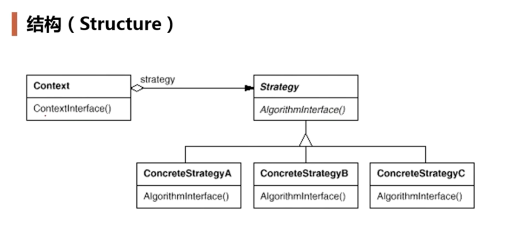

策略模式
动机
- 在软件构建过程中，某些对象使用的算法可能多种多样，经常改变，如果将这些算法都编码到对象中，将会使对象变得异常复杂，而且有时候支持不使用的算法也是一个性能负担。
- 如何在运行时根据需要透明地更改对象的算法？将算法与对象本身解耦，从而避免上述问题？
enum TaxBase {
CN_Tax,
US_Tax,
DE_Tax
};
class SalesOrder {
TaxBase tax;
public:
double CalculateTax() {
if (tax == CN_Tax) {
....
}
else if (tax == US_Tax) {
....
}
else if (tax == DE_Tax) {
...
}
}
}
如果新增一个 TaxBase 的类型，就需要更改 SalesOrder 的内容，违反了开闭原则，可以使用策略模式来处理
class TaxStrategy {
public:
virtual double Calculate(const Context& context) = 0;
virtual ~TaxStrategy() {}
}
class CNTax: public TaxStrategy {
public:
virtual double Calculate(const Context& context) {
.....
}
}
class USTax: public TaxStrategy {
public:
virtual double Calculate(const Context& context) {
.....
}
}
class DETax: public TaxStrategy {
public:
virtual double Calculate(const Context& context) {
.....
}
}
class SalesOrder {
private:
TaxStrategy *strategy;
public:
SalesOrder(TaxStrategyFactory *strategyFactory) {
this->strategy = strategyFactory->NewStrategy();
}
~ SalesOrder() {
delete this->strategy;
}
double CalculateTax() {
Context context();
double val = strategy->Calculate(context); // 多态调用
}
}
Q&&A: 这里为什么需要用
TaxStrategyFactory，为什么析构函数需要Delete
复用不是指的是源代码级别的复用，而是指的是二进制编译级别的复用；
定义
定义一系列算法，把它们一个个封装起来，并且使它们可互相替换（变化）。该模式使得算法可独立于使用它的客户程序（稳定）而变化（扩展，子类化）。
结构

要点总结
- Strategy 及其子类为组件提供了一系列可重用的算法，从而可以使得类型在运行时方便根据需要再各个算法之间进行切换
- Strategy 模式提供了用条件判断语句意外的另一种选择，消除条件判断语句，就是在解耦合。含有许多条件判断语句的代码通常都需要 Strategy 模式。
- 如果 Strategy 对象没有实例变量，那么各个上下文可以共享同一个 Strategy 对象，从而节省对象开销。